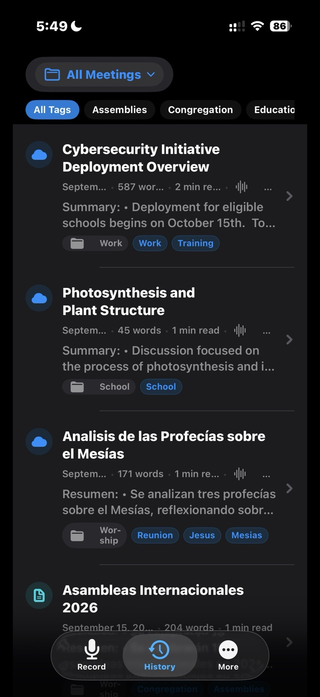

Record or import
Capture meetings in the app or import supported audio and video for online transcription.
Record a conversation or import existing audio and video. TapMinutes turns it into a searchable transcript, structured meeting minutes, and detailed notes you can organize, refine, export, and share.


TapMinutes does more than capture audio. It gives every conversation a practical next step, whether you need concise minutes, thorough notes, a full transcript, or all three.
Capture meetings in the app or import supported audio and video for online transcription.
Generate structured minutes, detailed notes, or both, with the original transcript preserved.
Separate work, school, clients, and projects, then connect related meetings with flexible tags.
Mark important moments in a recording and return to them quickly during review.
Keep meetings available across iPhone and iPad. Sync is included for Free and Pro users.
Export polished documents. Pro users can add a company name and logo to PDF exports.
Listen back, follow the transcript, switch between minutes and notes, and organize the result without leaving the meeting.
Bookmarks, playback controls, folders, and tags keep the important parts close at hand.


Export minutes or notes as a clean PDF. TapMinutes Pro adds your logo and company name.

Record, review, and organize with a layout that makes room for the full conversation.

A focused workflow carries you from a live conversation or existing recording to an organized, shareable result.
Record on iPhone, iPad, or Apple Watch.
Import or process supported recordings online.
Choose minutes, notes, both, and the style you need.
Organize, regenerate, export, and share.
Import existing media, organize meetings with folders and tags, sync across devices, customize professional PDF exports, and move faster from conversation to finished minutes.
Find step-by-step help or reach TapMinutes support directly.